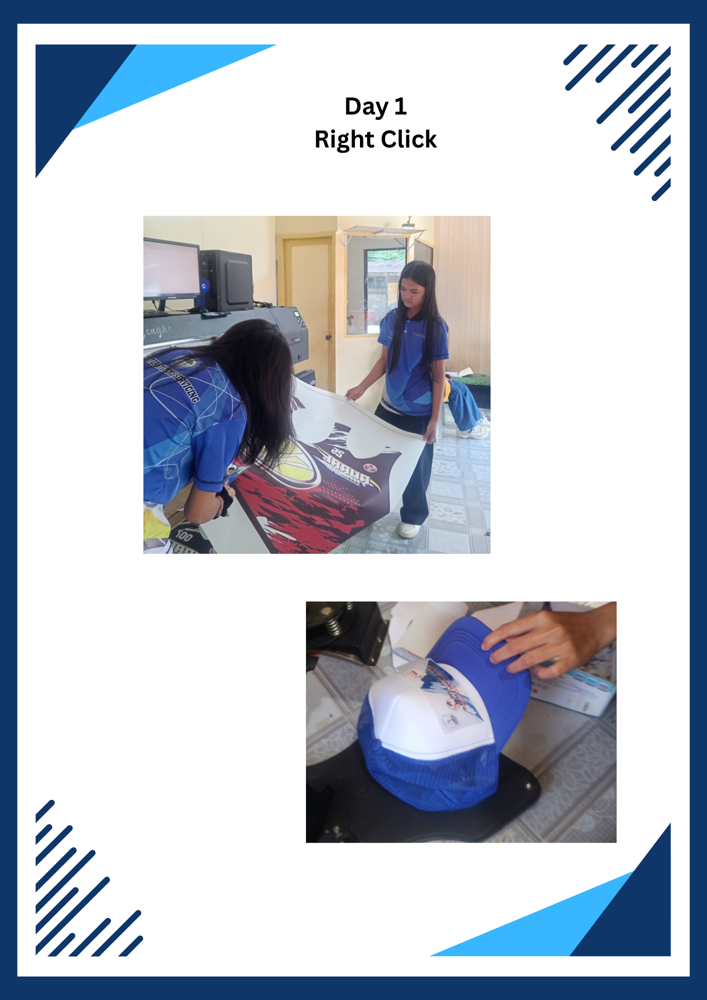
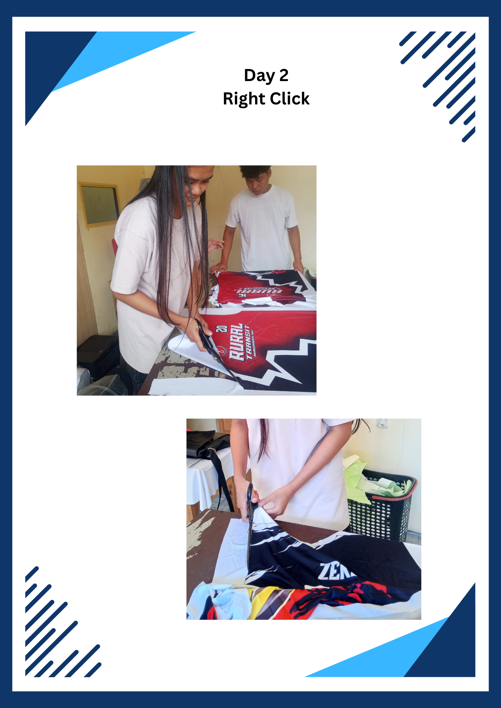
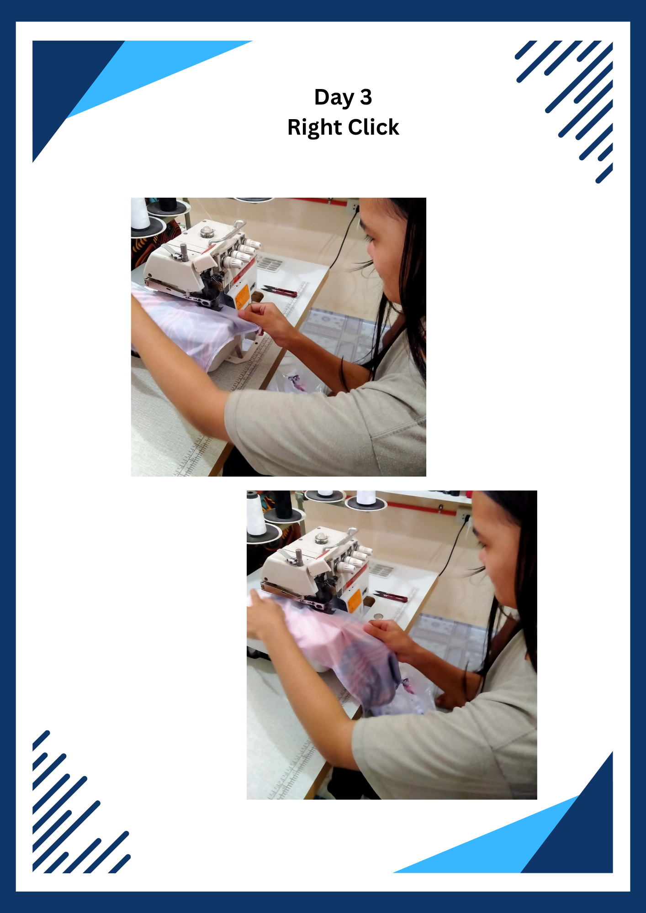
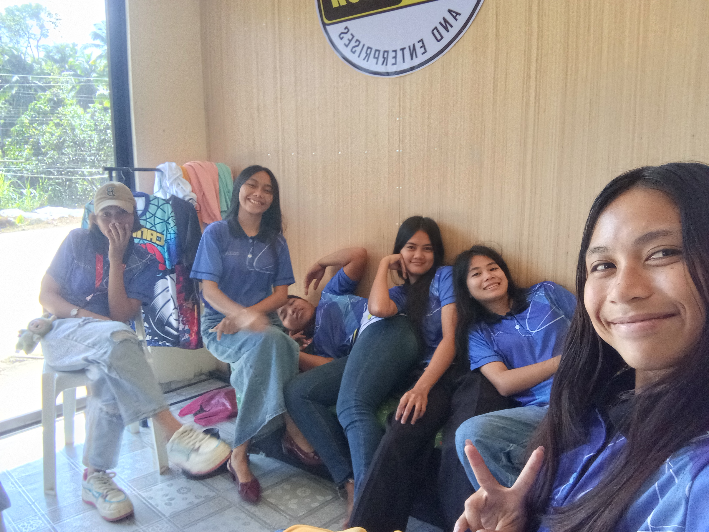
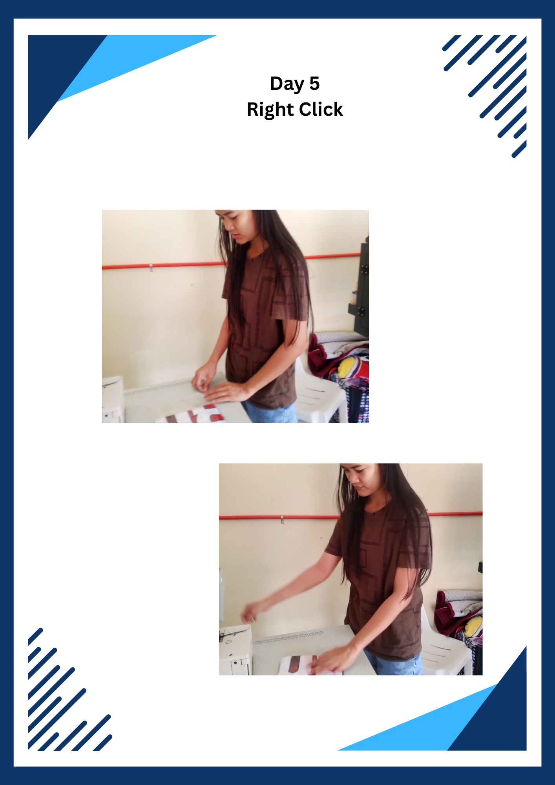
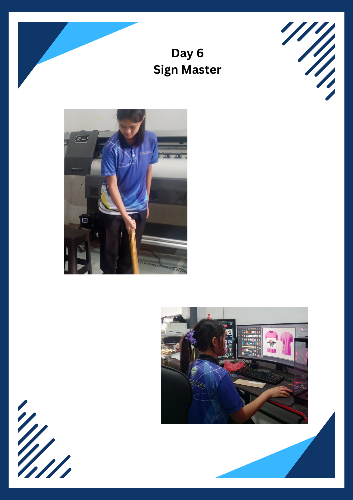
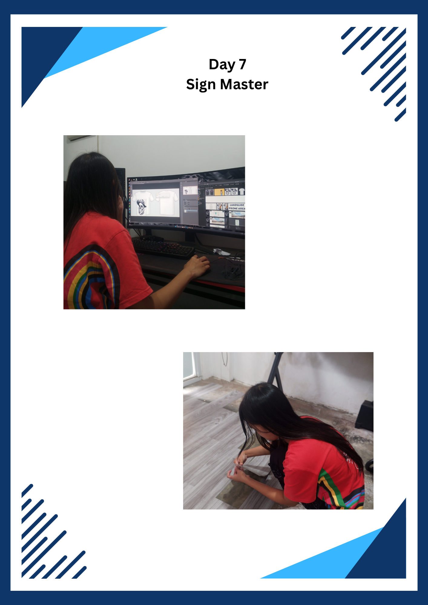
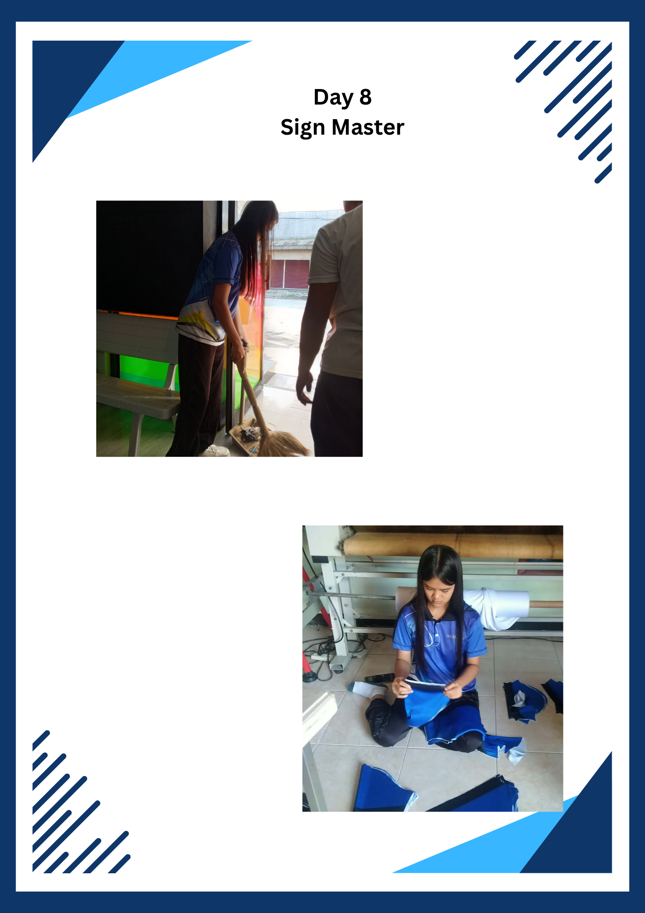
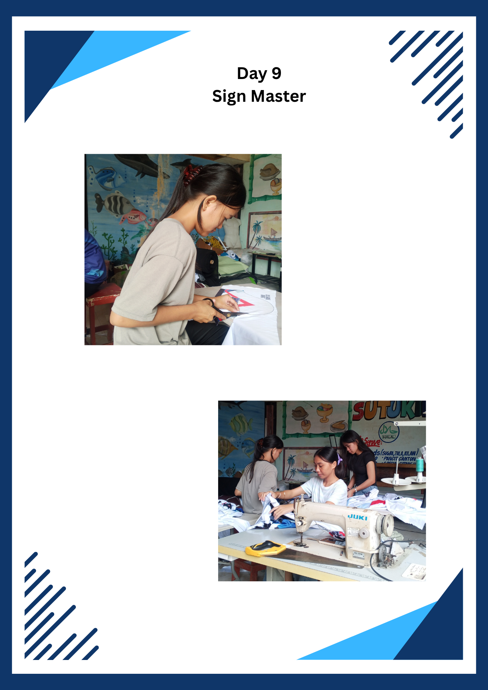
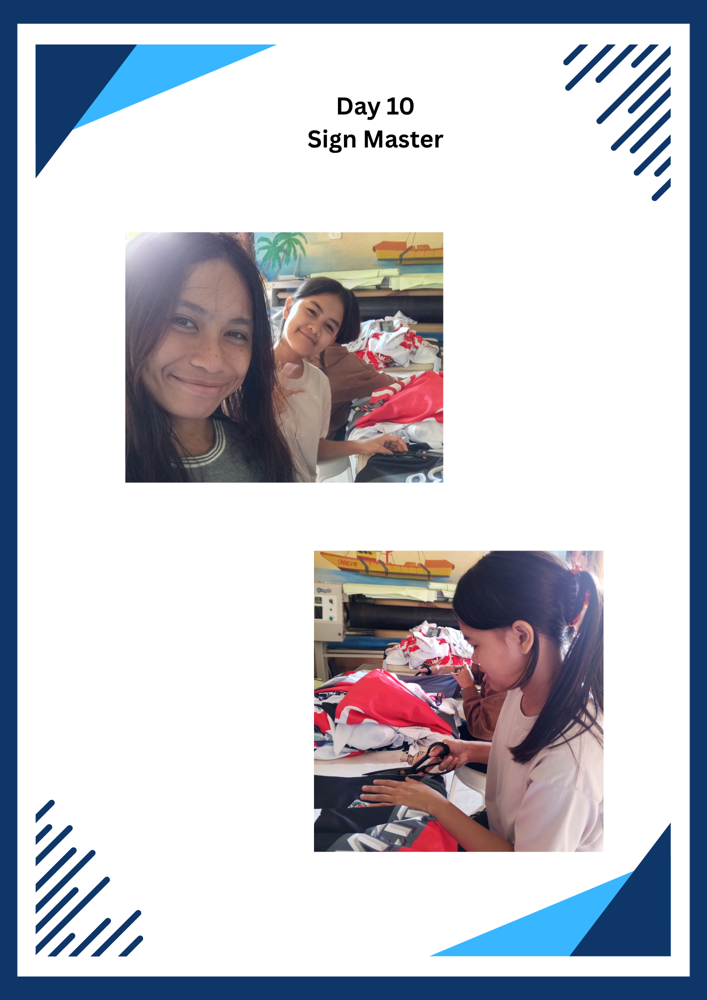

01
2013–2019
Elementary Education
Bacong Central School
Bacong, Salug, Zamboanga del Norte
Aspiring computer science professional
Learning, creating, and growing through technology.
I’m a Bachelor of Science in Computer Science student at Philippine Advent College. My journey combines an interest in technology with practical experience in design, printing, and workplace learning.
BSCS student · Creative learner · Future IT professional

01 / The person behind the portfolio
A quick introduction to who I am, what I’m studying, and what inspires me.
“Growing through every lesson, creating with purpose, and staying curious along the way.”
A little reminder to keep learning.02 / My learning journey
Every step has helped shape the learner I am today.
Bacong Central School
Bacong, Salug, Zamboanga del Norte
Bacong National High School
Computer System Servicing NC II specialization listed in the Grade 12 portfolio.
Bacong National High School
Senior high school education.
Philippine Advent College
Continuing to build a foundation in computing and technology.
03 / What I bring
A mix of personal values and practical experience.
Personal strengths
Approaching people and responsibilities with care.
Being open to learning and adapting to different tasks.
Valuing helpfulness and contributing where needed.
Technical background
Experience documented in my resume and work immersion portfolio.
✳ Currently learning and continuously developing my skills through education and practical experience.
04 / My experience
Practical experience in product design and printing-related tasks.
Digital printing & design-related work
Salug, Zamboanga del Norte
Helped making the designed shirts and caps, gaining practical experience in creative product design and digital printing-related work.
Printing process
Bacong, Salug, Zamboanga del Norte
Worked with the printing process for designed shirts, jackets, and caps.
05 / Beyond the classroom
A look at the places and documents that supported my practical learning.
My work immersion experience introduced me to real work environments and the importance of responsibility, safety, teamwork, confidentiality, and professionalism.
Replace the sample artwork with actual photos from your portfolio.










06 / Lessons that matter
Core ideas from the work immersion portfolio.
Being punctual, responsible, honest, and committed helps build trust and professionalism.
Following safety rules and proper procedures helps create a safe working environment.
Fair treatment, equal opportunity, and fulfilling workplace duties support respect and accountability.
Protecting private company, employee, and client information is an important part of professionalism.
Clear communication, respect for different opinions, and peaceful problem-solving help people work toward common goals.
07 / Selected work
A starting point for showcasing creative work and future BSCS projects.
 01
01One of the shirts we helped made.
 02
02One of the cap designs.
A dedicated space for programming exercises, websites, and other projects developed during BSCS studies.
Ready for future work08 / People who can vouch for me
People who can speak about my character, responsibility, and learning attitude.
Instructor, Computer Science
Advisor of Grade 12 Computer Systems and Servicing
Subject Adviser
08 / Let’s connect
I’m looking forward to learning, growing, and exploring opportunities related to my education and interests. Feel free to reach out.